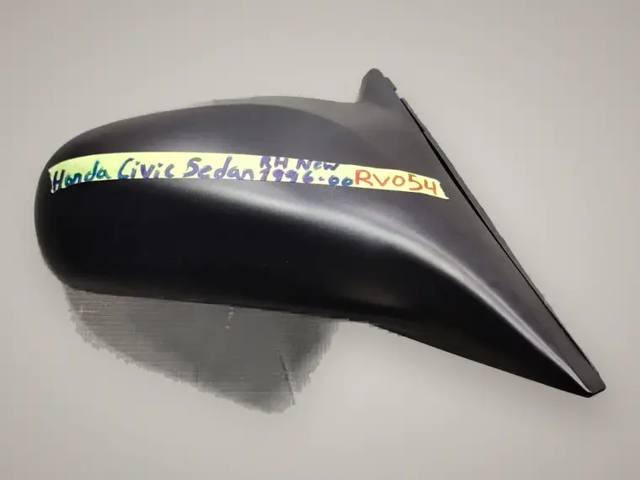
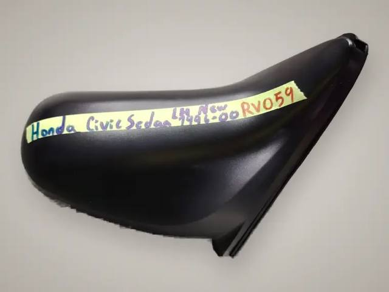

Piezas de carrocería para Honda Civic Sedán
9 piezas disponibles hoy para Honda Civic Sedán, cada una con su foto y su código: retrovisores (7), lámparas traseras (1), halógenas y faros antiniebla (1). Dinos el año de tu carro y te confirmamos si le sirve.
- Garantía de 3 días
- Foto real de cada pieza
- Efectivo, Yappy o ACH
- Lunes a sábado, 8:00 a. m. a 5:00 p. m.
Retrovisores para Honda Civic Sedán 7
 RV044Civic Sedán1996-00 · lado izquierdo
RV044Civic Sedán1996-00 · lado izquierdo
RV054Civic Sedán1996-00 · lado derecho RV055Civic Sedán1996-00 · lado derecho
RV055Civic Sedán1996-00 · lado derecho RV056Civic Sedán1996-00 · lado izquierdo
RV056Civic Sedán1996-00 · lado izquierdo RV057Civic Sedán1996-00 · lado derecho
RV057Civic Sedán1996-00 · lado derecho RV058Civic Sedán1996-00 · lado izquierdo
RV058Civic Sedán1996-00 · lado izquierdo
RV059Civic Sedán1996-00 · lado izquierdo 858Civic Sedan
858Civic Sedan